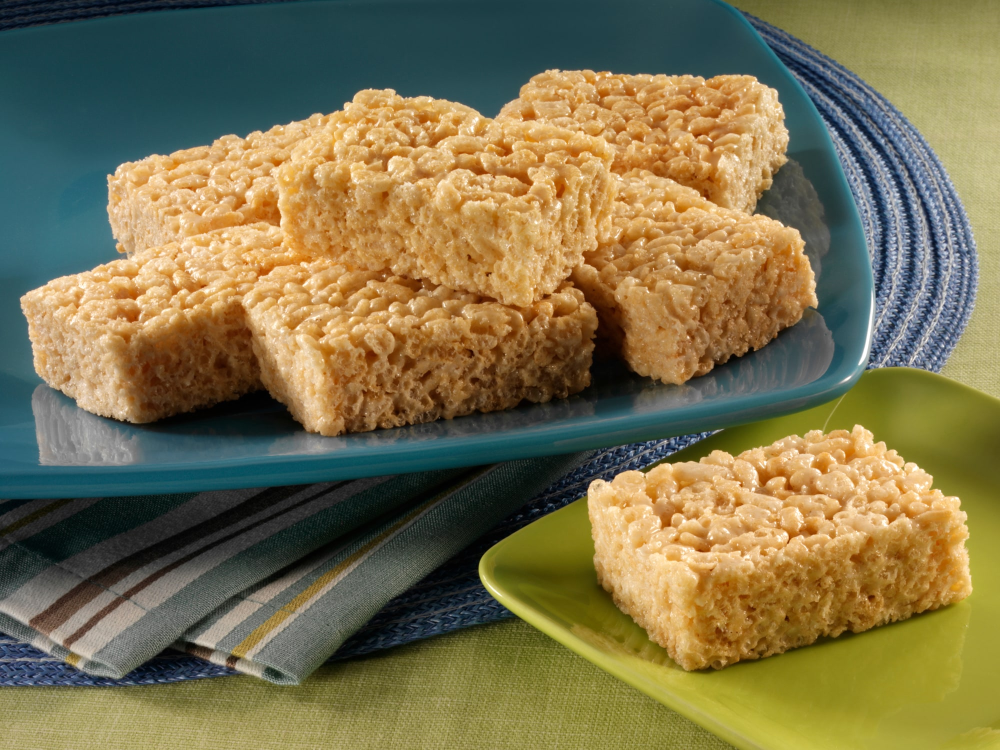

Home
Classic Rice Crispy Treats

Description
I spend days and days trying to come up with the perfect cake. Or the most beautiful cupcakes.
Or to create the fudgiest brownies. But, it’s no secret, Rice Krispie Treats have always been
the key to my heart. Knowing how to make rice krispie treats has gotten me far in life.
It’s the classic, original, homemade RICE KRISPIE TREAT that draws me in.
The biggest question is how to spell it. Some people say Rice Crispy, Some
say Crispy Rice, some say Rice Crispies. Either way, you get the point!.
Read more here.
Ingredients
- 3 tablespoons butter
- 1 package (10 oz., about 40) JET-PUFFED Marshmallows
OR
- 5-1/2 cups JET-PUFFED Miniature Marshmallows
- 6 cups Kellogg's® Rice Krispies® cereal
Preparation Steps
- In large saucepan melt butter over low heat. Add marshmallows and stir until completely melted. Remove from heat.
- Add KELLOGG'S RICEKRISPIES cereal. Stir until well coated.
- Using buttered spatula or wax paper evenly press mixture into 13 x 9 x 2-inch pan coated with cooking spray. Cool. Cut into 2-inch squares. Best if served the same day.